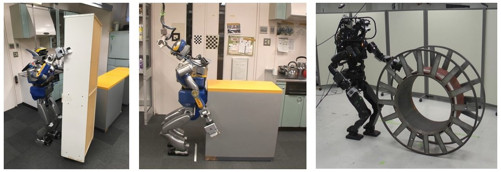
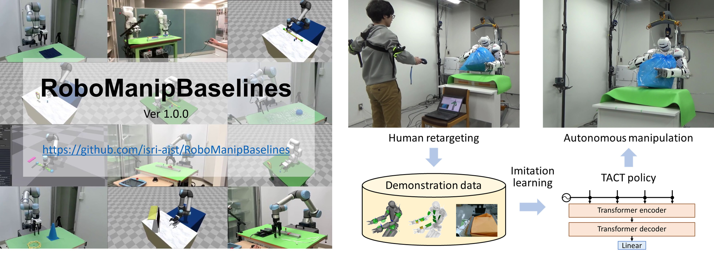
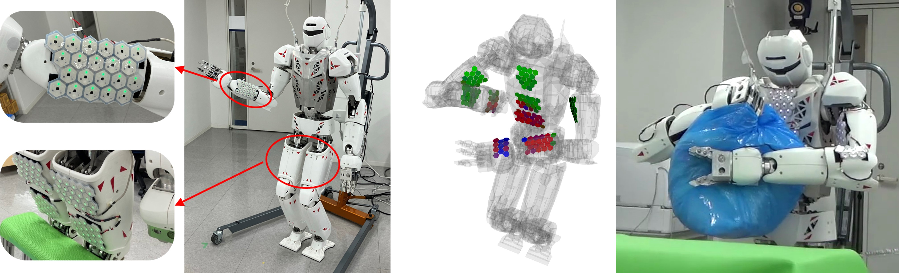
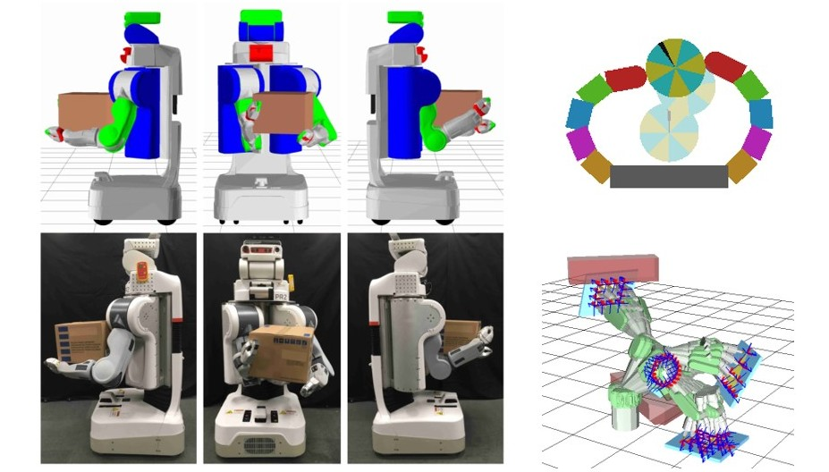
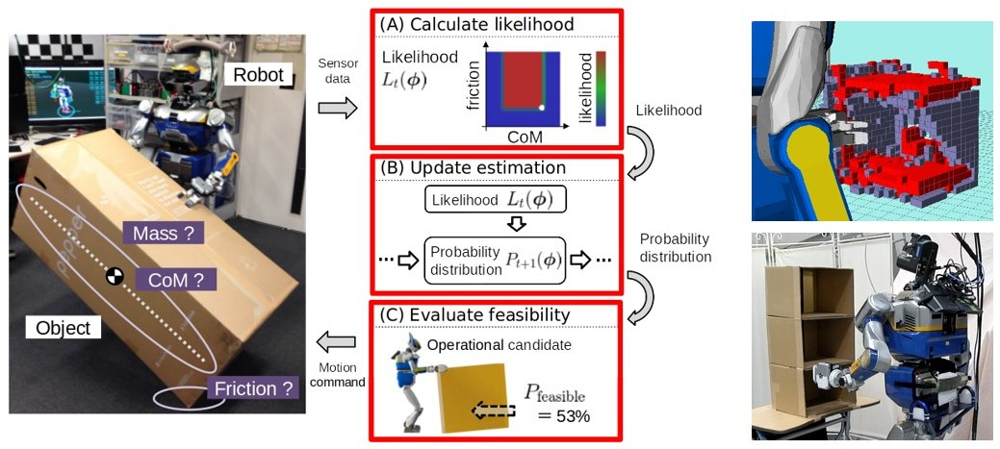

Affiliation
National Institute of Advanced Industrial Science and Technology (AIST), Japan
Robot Software Platform Research Team, Integrated Research Center for Advanced Manufacturing
(Concurrent) CNRS-AIST Joint Robotics Laboratory, IRL3218, Intelligent Systems Research Institute
(Concurrent) Embodied Al Research Team, Artificial Intelligence Research Center
Senior Researcher
Experience
Professional Experience
- April 2025 - Present:
Senior Researcher, Integrated Research Center for Advanced Manufacturing, AIST - October 2022 - March 2025:
Senior Researcher, CNRS-AIST Joint Robotics Laboratory, IRL3218, AIST - April 2023 - March 2024:
Robotics Policy Office, Ministry of Economy, Trade and Industry (Dispatched from AIST) - April 2020 - September 2022:
Researcher, CNRS-AIST Joint Robotics Laboratory, IRL3218, AIST - April 2018 - March 2020:
Project Assistant Professor, The University of Tokyo - April 2015 - March 2018:
JSPS Research Fellow (DC1)
Education
- March 2018:
Ph.D. in Information Science and Technology, Department of Mechano-Informatics, Graduate School of Information Science and Technology, The University of Tokyo - March 2015:
M.Sc. in Information Science and Technology, Department of Mechano-Informatics, Graduate School of Information Science and Technology, The University of Tokyo - March 2013:
B.Eng. in Mechano-Informatics, Faculty of Engineering, The University of Tokyo
Research Interests
I'm engaged in robotics research from various perspectives, encompassing motion planning and control to perception and learning, with a focus on humanoid robots and manipulation.
Whole-body Loco-Manipulation by Humanoid Robots
I am engaged in research on motion generation methods that enable humanoid robots to transport large, heavy objects while maintaining balance through various manipulation modes such as pushing, rolling, and pivoting.
Robot Motion Generation via Imitation Learning
I am engaged in research on achieving complex manipulation through imitation learning using human demonstrations, and in developing an open-source software framework for robot imitation learning.
Robot Control Based on Tactile Sensing
I am working on research that utilizes tactile information in model predictive control and imitation learning to enable multi-contact motion and object manipulation involving whole-body contact, by equipping distributed tactile sensors on the robot's body surface.
Motion Generation for High-DOF Robots Based on Optimization
I am researching how to formulate and efficiently solve complex motion generation problems for high-degree-of-freedom robots as optimization problems, such as motion trajectory planning including robot placement and manipulation posture generation involving whole-body contact.
Manipulation Based on Physical Consistency Inference from Visual and Force Sensing
I am engaged in research where robots estimate physical properties based on visual and force feedback while manipulating unknown objects, and adaptively generate motions according to the estimation results.
Selected Publications
TACT: Humanoid Whole-body Contact Manipulation through Deep Imitation Learning with Tactile Modality
Masaki Murooka, Takahiro Hoshi, Kensuke Fukumitsu, Shimpei Masuda, Marwan Hamze, Tomoya Sasaki, Mitsuharu Morisawa, Eiichi Yoshida
IEEE Robotics and Automation Letters, 2025.
Whole-Body Multi-Contact Motion Control for Humanoid Robots Based on Distributed Tactile Sensors
Masaki Murooka, Kensuke Fukumitsu, Marwan Hamze, Mitsuharu Morisawa, Hiroshi Kaminaga, Fumio Kanehiro, Eiichi Yoshida
IEEE Robotics and Automation Letters, vol. 9, no. 11, pp. 10620-10627, 2024.
Humanoid Loco-Manipulations Pattern Generation and Stabilization Control
Masaki Murooka, Kevin Chappellet, Arnaud Tanguy, Mehdi Benallegue, Iori Kumagai, Mitsuharu Morisawa, Fumio Kanehiro, Abderrahmane Kheddar
IEEE Robotics and Automation Letters, vol. 6, no. 3, pp. 5597-5604, 2021 (Presented at IROS 2021).
Humanoid Loco-Manipulation Planning Based on Graph Search and Reachability Maps
Masaki Murooka, Iori Kumagai, Mitsuharu Morisawa, Fumio Kanehiro, Abderrahmane Kheddar
IEEE Robotics and Automation Letters, vol. 6, no. 2, pp. 1840-1847, 2021 (Presented at ICRA 2021).
Optimization-Based Posture Generation for Whole-Body Contact Motion by Contact Point Search on the Body Surface
Masaki Murooka, Kei Okada, Masayuki Inaba
IEEE Robotics and Automation Letters, vol. 5, no. 2, pp. 2905-2912, 2020 (Presented at ICRA 2020).